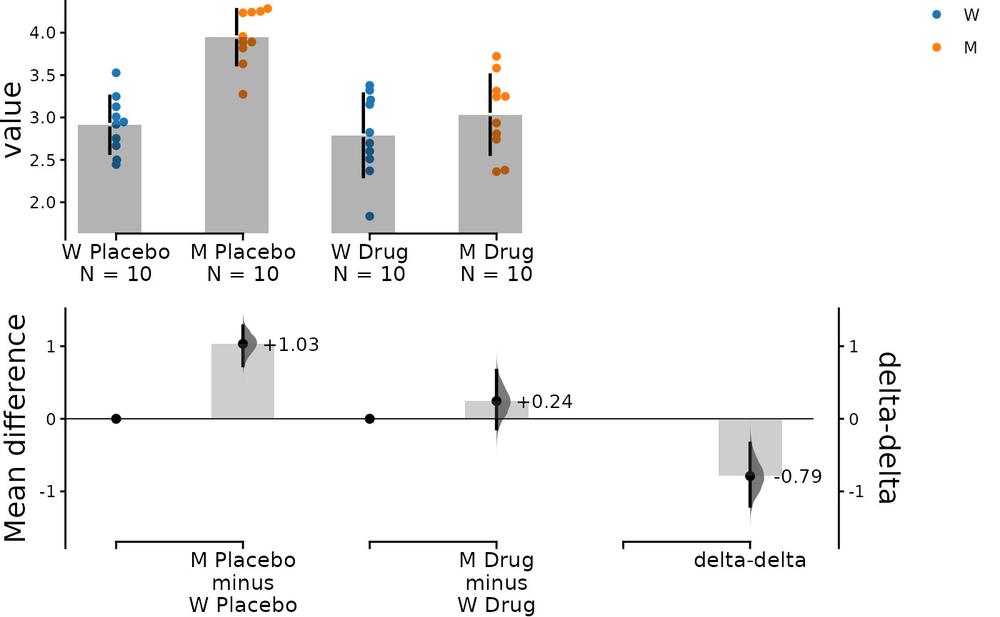
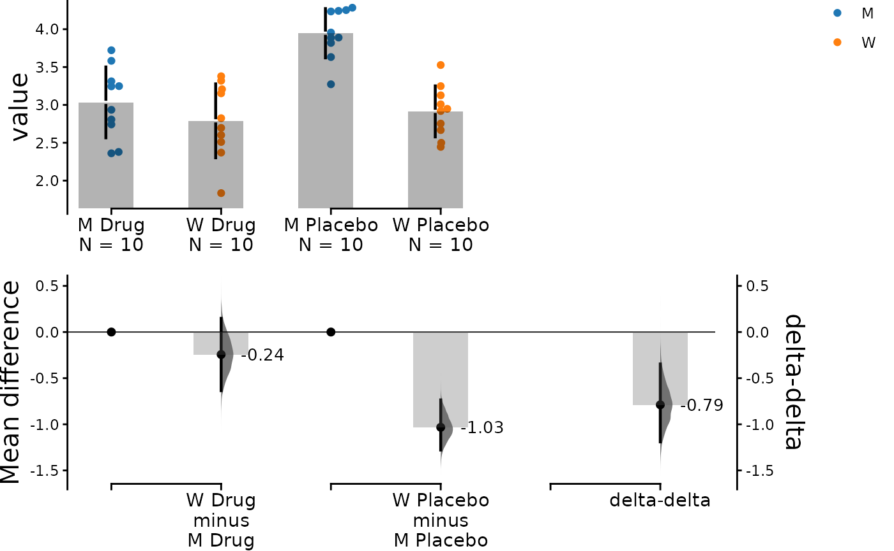
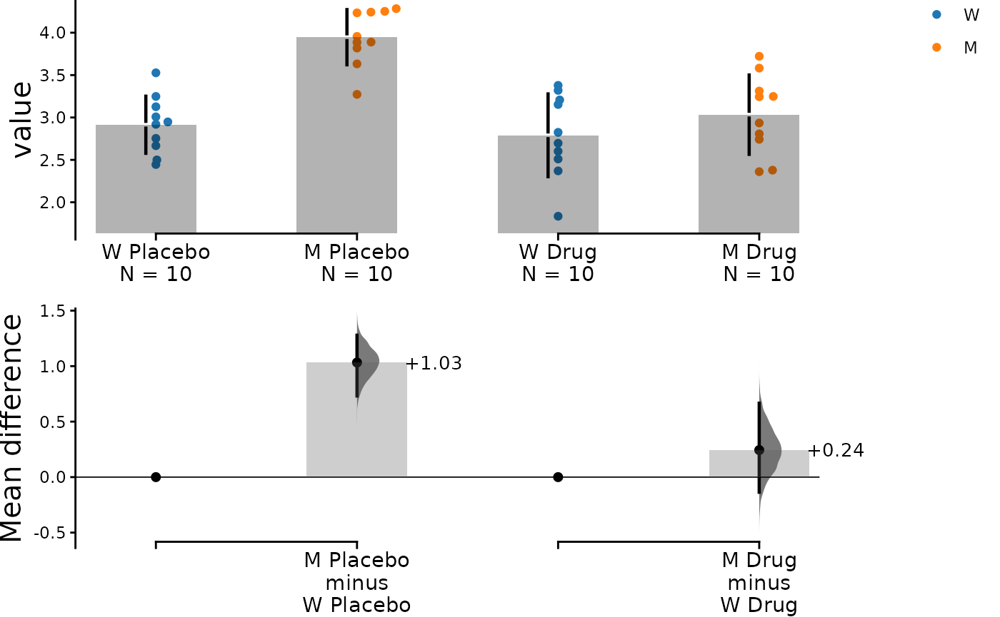

This vignette documents how dabestr is able to compute
the calculation of delta-delta, an experimental function that allows the
comparison between two bootstrapped effect sizes computed from two
independent categorical variables.
Many experimental designs investigate the effects of two interacting independent variables on a dependent variable. The delta-delta effect size lets us distill the net effect of the two variables. To illustrate this, let’s delve into the following problem.
Consider an experiment where we test the efficacy of a drug named
Drug on a disease-causing mutation M based on
disease metric Y. The greater value Y has the
more severe the disease phenotype is. Phenotype Y has been
shown to be caused by a gain of function mutation M, so we
expect a difference between wild type (W) subjects and
mutant subjects (M). Now, we want to know whether this
effect is ameliorated by the administration of Drug
treatment. We also administer a placebo as a control. In theory, we only
expect Drug to have an effect on the M group,
although in practice many drugs have non-specific effects on healthy
populations too.
Effectively, we have 4 groups of subjects for comparison.
| Wild type | Mutant | |
|---|---|---|
| Drug | \(X_D, W\) | \(X_D, M\) |
| Placebo | \(X_P, W\) | \(X_P, M\) |
There are 2 Treatment conditions, Placebo
(control group) and Drug (test group). There are 2
Genotypes: W (wild type population) and
M (mutant population). In addition, each experiment was
done twice (Rep1 and Rep2). We shall do a few
analyses to visualise these differences in a simulated dataset.
Create dataset for demo
set.seed(12345) # Fix the seed so the results are replicable.
# pop_size = 10000 # Size of each population.
N <- 20 # The number of samples taken from each population
# Create samples
placebo <- rnorm(N / 2, mean = 4, sd = 0.4)
placebo <- c(placebo, rnorm(N / 2, mean = 2.8, sd = 0.4))
drug <- rnorm(N / 2, mean = 3, sd = 0.4)
drug <- c(drug, rnorm(N / 2, mean = 2.5, sd = 0.4))
# Add a `Genotype` column as the second variable
genotype <- c(rep("M", N / 2), rep("W", N / 2))
# Add an `id` column for paired data plotting.
id <- 1:N
# Add a `Rep` column as the first variable for the 2 replicates of experiments done
Rep <- rep(c("Rep1", "Rep2"), N / 2)
# Combine all columns into a DataFrame.
df <- tibble::tibble(
Placebo = placebo,
Drug = drug,
Genotype = genotype,
ID = id,
Rep = Rep
)
df <- df %>%
tidyr::gather(key = Treatment, value = Measurement, -ID, -Genotype, -Rep)| Genotype | ID | Rep | Treatment | Measurement |
|---|---|---|---|---|
| M | 1 | Rep1 | Placebo | 4.234211 |
| M | 2 | Rep2 | Placebo | 4.283786 |
| M | 3 | Rep1 | Placebo | 3.956279 |
| M | 4 | Rep2 | Placebo | 3.818601 |
| M | 5 | Rep1 | Placebo | 4.242355 |
| M | 6 | Rep2 | Placebo | 3.272818 |
Loading Data
To make a delta-delta plot, you need to simply set
delta2 = TRUE in the load() function.
colour will be used to determine the colour of dots for
scattered plots or the colour of lines for slopegraphs. The
experiment input will be used to specify grouping of the
data.
For delta-delta plots, the idx is a non-compulsory
input.
Unpaired Data
unpaired_delta2 <- load(df,
x = Genotype, y = Measurement,
experiment = Treatment, colour = Genotype,
delta2 = TRUE
)The above function creates the following dabest
object:
print(unpaired_delta2)
#> DABESTR v2023.9.12
#> ==================
#>
#> Good morning!
#> The current time is 06:04 AM on Tuesday December 12, 2023.
#>
#> Effect size(s) with 95% confidence intervals will be computed for:
#> 1. M Placebo minus W Placebo
#> 2. M Drug minus W Drug
#> 3. Drug minus Placebo (only for mean difference)
#>
#> 5000 resamples will be used to generate the effect size bootstraps.We can quickly check out the effect sizes:
unpaired_delta2.mean_diff <- mean_diff(unpaired_delta2)
print(unpaired_delta2.mean_diff)
#> DABESTR v2023.9.12
#> ==================
#>
#> Good morning!
#> The current time is 06:04 AM on Tuesday December 12, 2023.
#>
#> The unpaired mean difference between M Placebo and W Placebo is 1.032 [95%CI 0.731, 1.279].
#> The p-value of the two-sided permutation t-test is 0.0000, calculated for legacy purposes only.
#>
#> The unpaired mean difference between M Drug and W Drug is 0.244 [95%CI -0.136, 0.666].
#> The p-value of the two-sided permutation t-test is 0.3527, calculated for legacy purposes only.
#>
#> 5000 bootstrap samples were taken; the confidence interval is bias-corrected and accelerated.
#> Any p-value reported is the probability of observing the effect size (or greater),
#> assuming the null hypothesis of zero difference is true.
#> For each p-value, 5000 reshuffles of the control and test labels were performed.
dabest_plot(unpaired_delta2.mean_diff)
In the above plot, the horizontal axis represents the
Genotype condition and the dot colour is also specified by
Genotype. The left pair of scattered plots is based on the
Placebo group while the right pair is based on the
Drug group. The bottom left axis contains the two primary
deltas: the Placebo delta and the Drug delta.
We can easily see that when only the placebo was administered, the
mutant phenotype is around 1.23 [95%CI 0.948, 1.52]. This difference was
shrunken to around 0.326 [95%CI 0.0934, 0.584] when the drug was
administered. This gives us some indication that the drug is effective
in amiliorating the disease phenotype. Since the Drug did
not completely eliminate the mutant phenotype, we have to calculate how
much net effect the drug had. This is where delta-delta comes in. We use
the Placebo delta as a reference for how much the mutant
phenotype is supposed to be, and we subtract the Drug delta
from it. The bootstrapped mean differences (delta-delta) between the
Placebo and Drug group are plotted at the
right bottom with a separate y-axis from other bootstrap plots. This
effect size, at about -0.903 [95%CI -1.28, -0.513], is the net effect
size of the drug treatment. That is to say that treatment with drug A
reduced disease phenotype by 0.903.
Mean difference between mutants and wild types given the placebo treatment is:
\[\Delta_1 = \bar{X}_{P,M}-\bar{X}_{P,W}\]
Mean difference between mutants and wild types given the drug treatment is:
\[\Delta_2 = \bar{X}_{D,M}-\bar{X}_{D,W}\] The net effect of the drug on mutants is:
\[\Delta_\Delta = \Delta_1 - \Delta_2\] where \(\bar{X}\) is the sample mean, \(\Delta\) is the mean difference.
Specifying Grouping for Comparisons
In the example above, we used the convention of “test - control’ but
you can manipulate the orders of experiment groups as well as the
horizontal axis variable by setting experiment_label and
x1_level.
unpaired_delta2_specified.mean_diff <- load(df,
x = Genotype, y = Measurement,
experiment = Treatment, colour = Genotype,
delta2 = TRUE,
experiment_label = c("Drug", "Placebo"),
x1_level = c("M", "W")
) %>%
mean_diff()
dabest_plot(unpaired_delta2_specified.mean_diff)
Paired Data
The delta - delta function also supports paired data, which is useful
for us to visualise the data in an alternate way. Assuming that the
placebo and drug treatment were done on the same subjects, our data is
paired between the treatment conditions. We can specify this by using
Treatment as x and Genotype as
experiment, and we further specify that id_col
is ID, linking data from the same subject with each other.
Since we have done two replicates of the experiments, we can also colour
the slope lines according to Rep.
Although the idx is a non-compulsory parameter, it is
still possible to have it as an input to adjust the order as opposed to
using experiment_label and x1_level.
paired_delta2.mean_diff <- load(df,
x = Treatment, y = Measurement,
experiment = Genotype, colour = Rep,
delta2 = TRUE,
idx = list(
c("Placebo W", "Drug W"),
c("Placebo M", "Drug M")
),
paired = "baseline", id_col = ID
) %>%
mean_diff()
dabest_plot(paired_delta2.mean_diff,
raw_marker_size = 0.5, raw_marker_alpha = 0.3
)We see that the drug had a non-specific effect of -0.125 [95%CI -0.486 , 0.214] on wild type subjects even when they were not sick, and it had a bigger effect of -0.913 [95%CI -1.24 , -0.577] in mutant subjects. In this visualisation, we can see the delta-delta value of -0.789 [95%CI -1.3 , -0.317] as the net effect of the drug accounting for non-specific actions in healthy individuals
Mean difference between drug and placebo treatments in wild type subjects is:
\[\Delta_1 = \bar{X}_{D,M}-\bar{X}_{P,W}\]
Mean difference between drug and placebo treatments in mutant subjects is:
\[\Delta_2 = \bar{X}_{D,M}-\bar{X}_{P,W}\] The net effect of the drug on mutants is:
\[\Delta_\Delta = \Delta_2 - \Delta_1\] where \(\bar{X}\) is the sample mean, \(\Delta\) is the mean difference.
Connection to ANOVA
The configuration of comparison we performed above is reminiscent of
a two-way ANOVA. In fact, the delta - delta is an effect size estimated
for the interaction term between Treatment and
Genotype. Main effects of Treatment and
Genotype, on the other hand, can be determined by simpler,
univariate contrast plots.
Omitting Delta-delta Plot
If for some reason you don’t want to display the delta-delta plot, you can easily do so by
dabest_plot(unpaired_delta2.mean_diff, show_delta2 = FALSE)
Other Effect Sizes
Since the delta-delta function is only applicable to mean differences, plots of other effect sizes will not include a delta-delta bootstrap plot.
# cohens_d(unpaired_delta2)Statistics
You can find all outputs of the delta - delta calculation by
assessing the column named boot_result of the
dabest_effectsize_obj.
print(unpaired_delta2.mean_diff$boot_result)
#> # A tibble: 3 × 11
#> control_group test_group bootstraps nboots bca_ci_low bca_ci_high pct_ci_low
#> <chr> <chr> <list> <int> <dbl> <dbl> <dbl>
#> 1 W Placebo M Placebo <dbl> 5000 0.731 1.28 0.748
#> 2 W Drug M Drug <dbl> 5000 -0.136 0.666 -0.151
#> 3 Delta2 Overall… Delta2 Ov… <dbl> 5000 -1.20 -0.337 -0.799
#> # ℹ 4 more variables: pct_ci_high <dbl>, ci <dbl>, difference <dbl>,
#> # weight <dbl>If you want to extract the permutations, permutation test’s p values,
the statistical tests and the p value results, you can access it with
the columns permutation_test_results,
pval_permtest, pval_for_tests and
pvalues respectively.
P values for permutation tests pval_permtest (and the
permutation calculations and results accessed by running the commented
out session).
# print(unpaired_delta2.mean_diff$permtest_pvals$permutation_test_results)
print(unpaired_delta2.mean_diff$permtest_pvals$pval_permtest)
#> [1] 0.0000 0.2728An representative p value for statistical tests
(pval_for_tests)
print(unpaired_delta2.mean_diff$permtest_pvals$pval_for_tests)
#> $pvalue_wilcoxon
#> [1] 2.165018e-05
#>
#> $pvalue_wilcoxon
#> [1] 0.3526814Statistical test results and pvalues.
print(unpaired_delta2.mean_diff$permtest_pvals$pvalues)
#> [[1]]
#> [[1]]$pvalue_wilcoxon
#> [1] 2.165018e-05
#>
#> [[1]]$wilcoxon
#>
#> Wilcoxon rank sum exact test
#>
#> data: control and test
#> W = 1, p-value = 2.165e-05
#> alternative hypothesis: true location shift is not equal to 0
#>
#>
#> [[1]]$statistic_wilcoxon
#> W
#> 1
#>
#> [[1]]$paired_t
#>
#> Paired t-test
#>
#> data: control and test
#> t = -6.1826, df = 9, p-value = 0.0001622
#> alternative hypothesis: true mean difference is not equal to 0
#> 95 percent confidence interval:
#> -1.4101885 -0.6546739
#> sample estimates:
#> mean difference
#> -1.032431
#>
#>
#> [[1]]$pvalue_paired_students_t
#> [1] 0.0001622227
#>
#> [[1]]$statistic_paired_students_t
#> t
#> -6.182598
#>
#>
#> [[2]]
#> [[2]]$pvalue_wilcoxon
#> [1] 0.3526814
#>
#> [[2]]$wilcoxon
#>
#> Wilcoxon rank sum exact test
#>
#> data: control and test
#> W = 37, p-value = 0.3527
#> alternative hypothesis: true location shift is not equal to 0
#>
#>
#> [[2]]$statistic_wilcoxon
#> W
#> 37
#>
#> [[2]]$paired_t
#>
#> Paired t-test
#>
#> data: control and test
#> t = -1.1419, df = 9, p-value = 0.283
#> alternative hypothesis: true mean difference is not equal to 0
#> 95 percent confidence interval:
#> -0.7262822 0.2390283
#> sample estimates:
#> mean difference
#> -0.243627
#>
#>
#> [[2]]$pvalue_paired_students_t
#> [1] 0.2829828
#>
#> [[2]]$statistic_paired_students_t
#> t
#> -1.141855